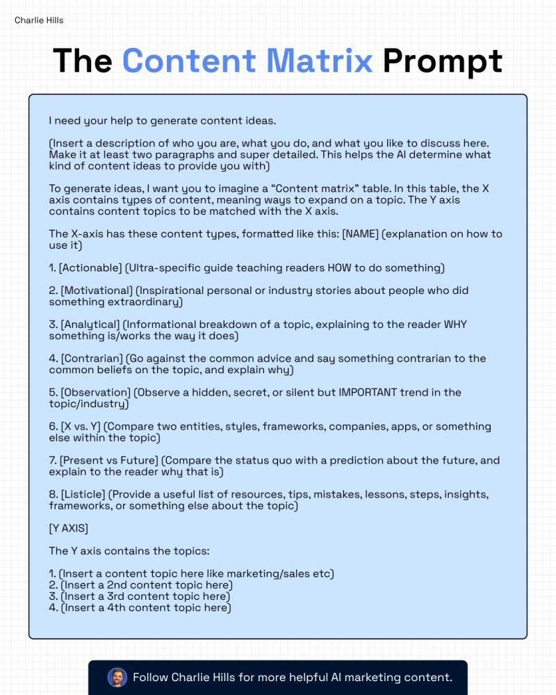

I need your help to generate content ideas.
(Insert a description of who you are, what you do, and what you like to discuss here. Make it at least two paragraphs and super detailed. This helps the AI determine what kind of content ideas to provide you with)
To generate ideas, I want you to imagine a "Content matrix" table. In this table, the X axis contains types of content, meaning ways to expand on a topic. The Y axis contains content topics to be matched with the X axis.
The X-axis has these content types, formatted like this: [NAME] (explanation on how to use it)
- [Actionable] (Ultra-specific guide teaching readers HOW to do something)
- [Motivational] (Inspirational personal or industry stories about people who did something extraordinary)
- [Analytical] (Informational breakdown of a topic, explaining to the reader WHY something is/works the way it does)
- [Contrarian] (Go against the common advice and say something contrarian to the common beliefs on the topic, and explain why)
- [Observation] (Observe a hidden, secret, or silent but IMPORTANT trend in the topic/industry)
- [X vs. Y] (Compare two entities, styles, frameworks, companies, apps, or something else within the topic)
- [Present vs Future] (Compare the status quo with a prediction about the future, and explain to the reader why that is)
- [Listicle] (Provide a useful list of resources, tips, mistakes, lessons, steps, insights, frameworks, or something else about the topic)
[Y AXIS]
The Y axis contains the topics:
- (Insert a content topic here like marketing/sales etc)
- (Insert a 2nd content topic here)
- (Insert a 3rd content topic here)
- (Insert a 4th content topic here)